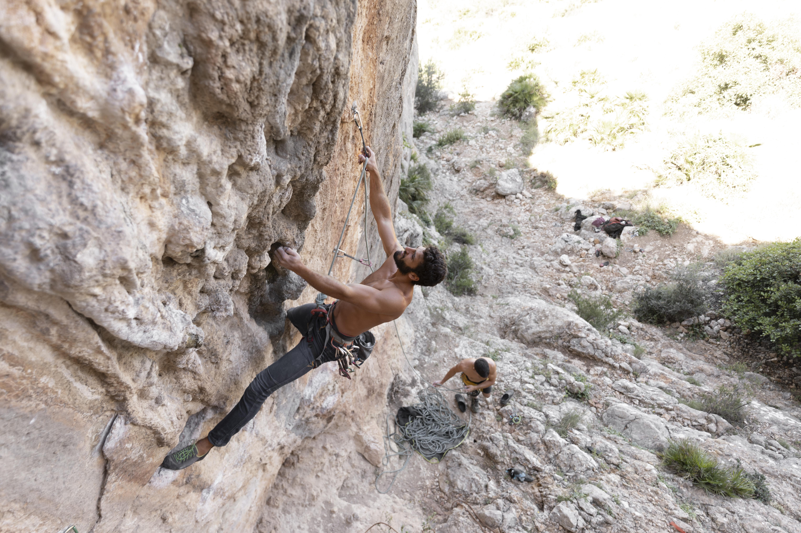
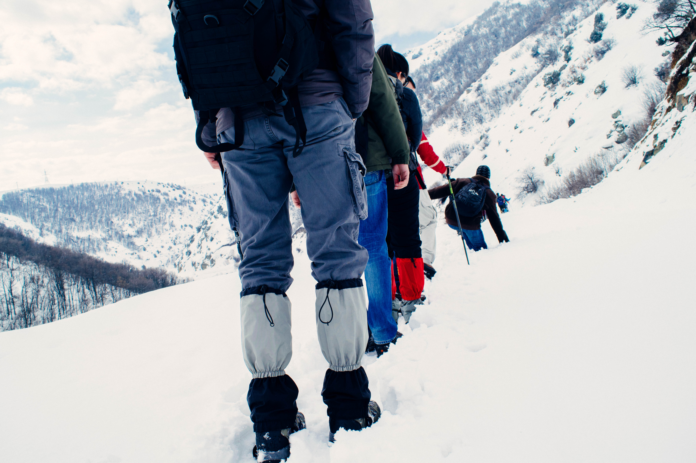

O que é Escalada?
Breve História sobre Escalada
A escalada é uma prática antiga que evoluiu de técnicas de alpinismo e montanhismo. Começou como uma forma de exploração e conquista de territórios inacessíveis, mas ao longo dos anos, tornou-se um esporte com regras e competições próprias. A escalada moderna ganhou popularidade no século XX, com o surgimento de técnicas e equipamentos especializados.

Escalada em Rocha
Realizada em formações rochosas naturais. Pode ser tradicional (onde o escalador coloca proteção durante a subida) ou esportiva (onde a proteção já está fixada na rocha).

Escalada em Gelo
Feita em superfícies de gelo, como geleiras e cascatas de gelo. Requer equipamentos específicos, como crampons e picaretas.

Boulder
Escalada em blocos de rocha de pequena altura, geralmente sem o uso de cordas. A segurança é garantida por colchões de proteção no solo.

Escalada Indoor
Praticada em paredes artificiais, em ginásios de escalada. Ideal para treinamento e prática em ambientes controlados.